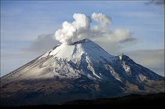

VULKANIZEM V ITALIJI
ETNA

Etna je najaktivnejši vulkan od aktivnih vulkanov v Italiji, leži na vzhodni Siciliji in je visok kar 3329 metrov. Etno odlikuje močna ognjeniška dejavnost, izbruhi si sledijo vsakih nekaj let, bruhal je že tudi letos Aprila.. Zaradi stalnega nadzora in razmeroma majhne silovitosti izbruhov ti navadno ne terjajo človeških žrtev, pogosto pa potoki lave uničijo hiše in vrtove. Ob enem zadnjih izbruhov so tok lave preusmerili v bližnjo nenaseljeno dolino in tako pred uničenjem rešili vas. Še do danes nerazumljen in znanstveno še ni čisto razložen, kar kaže na ogromno domnev o tektoniki Etne, ki so bile narejene. Prvič je izbruhnil že pred okoli 500.000 leti in od takrat do danes je še vedno zelo aktiven vulkan